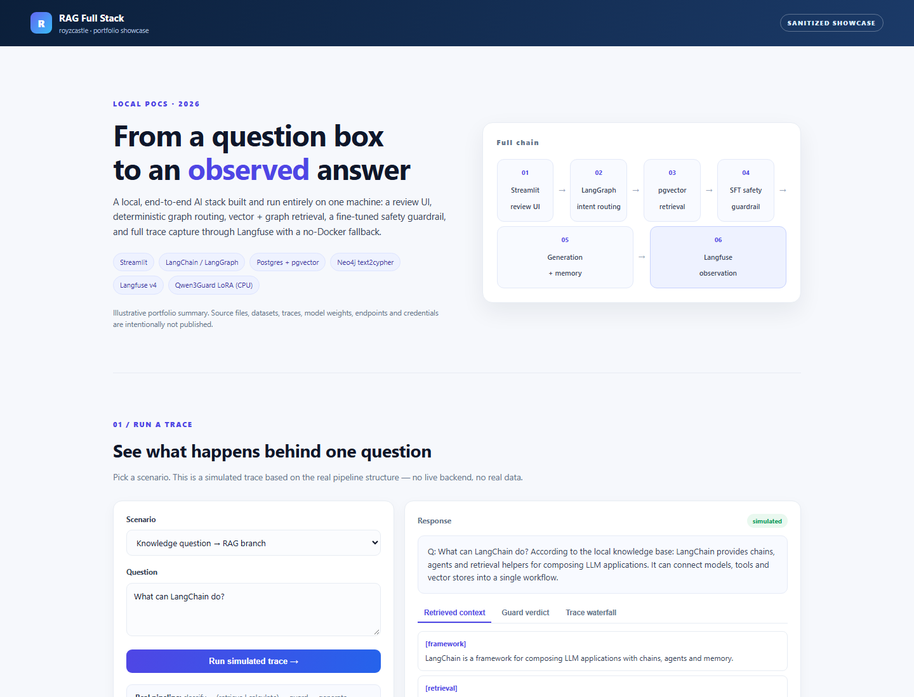

Choose a project
Each project has its own page with the architecture, engineering decisions and an interactive showcase.
 01 · EXECUTIVE REPORTING
01 · EXECUTIVE REPORTING
AI Flash Report
A one-page, AI-enhanced daily briefing for a Macau integrated resort CEO office — GGR, VIP rolling, non-gaming and occupancy, with AI summary, anomaly insights, Ask AI Q&A and a Microsoft Teams tab package.

02 · AI ENGINEERING & GOVERNANCERAG Full Stack
A local, end-to-end chain: Streamlit review UI, LangGraph routing, pgvector retrieval, Neo4j text2cypher, CPU-only Qwen3Guard LoRA SFT, and Langfuse observation with a no-Docker fallback.
Both projects are conceptualized reference models built locally for demonstration. Metrics are synthetic, brands are fictional, and no employer confidential information is shown. The detail pages include the full scope notice.